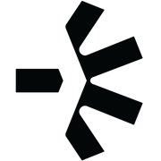
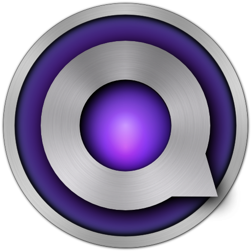
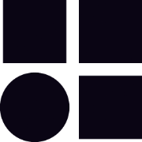
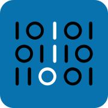

by evertfront
Software Update Watcher
Laatst gecontroleerd 23 nov, 17:30
6 programma's hebben een nieuwe versie.

Dante ControllerNieuwMac-versie kan een nummer achterlopen4.18.1.2Vorige versie 4.18.0.11Uitgebracht 15 jul 2026
QLabNieuw5.6.5Vorige versie 5.6.4Uitgebracht 28 okt 2026Release notesWijzigingen
- fixed: A regression in 5.6.4 that could cause QLab to crash when trying to manage tool tips.
- fixed: When deleting a cue list or cart, the workspace will now ensure that a remaining list is correctly selected.
- fixed: The Art-Net tab of the Workspace Status window now remains responsive when looking for Art-Net nodes on a slow network.
- fixed: A bug that could cause QLab to crash when the light definition chooser was visible in the light settings.
- fixed: A number of performance improvements when editing workspaces.
- Download Latest Version
- Version
- 5.6.5
- Release Date
- October 28, 2026
- Requirements
- macOS 11 or later
- ← 5.6.4
- Previous version
- Shure Wireless WorkbenchNieuw7.9.0Vorige versie 7.8.3Uitgebracht 6 okt 2026
 L-Acoustics Network ManagerVersie handmatig bijgehouden2026.2.1
L-Acoustics Network ManagerVersie handmatig bijgehouden2026.2.1- L-Acoustics SoundvisionVersie handmatig bijgehouden2026.4
- LiveProfessorNieuw2026.3.0Vorige versie 2026.2.2Uitgebracht 9 okt 2026Volledige changelog
Wijzigingen
- Fix: Fixed issue with hang on mac
- Improvement: Added OSC address /GlobalSnapshots/Update [snapshot name]
- Fix: Some VST3 plugins crashed on windows during load
- Milan ManagerNieuw3.0.3Vorige versie 2.5.3Ontdekt op 23 nov
- REAPER7.86Uitgebracht 13 nov 2026Changelog
Wijzigingen
- support new .ReaperPkg file format, allowing easy install/uninstall of JSFX/Extensions/Scripts/etc
- •
- Lake ControllerNieuwAlleen Windows8.1.7Vorige versie 8.1.6Ontdekt op 23 nov
- Green-GO Control5.2.2

d&b ArrayCalcDownload vereist My d&b-account (versie handmatig)12.10.0Uitgebracht 20 okt 2026
FabFilter Pro-Q 44.13Uitgebracht 25 jun 2026- FabFilter Pro-C 33.02Uitgebracht 16 apr 2026
- FabFilter Pro-L 22.26Uitgebracht 16 apr 2026
- FabFilter Pro-R 22.06Uitgebracht 16 apr 2026
- FabFilter Pro-MB1.33Uitgebracht 16 apr 2026
- FabFilter Pro-DS1.32Uitgebracht 16 apr 2026
- FabFilter Pro-G1.42Uitgebracht 16 apr 2026
- FabFilter Saturn 22.13Uitgebracht 16 apr 2026
- FabFilter Timeless 33.10Uitgebracht 16 apr 2026
- FabFilter Volcano 33.09Uitgebracht 16 apr 2026
- FabFilter Twin 33.10Uitgebracht 27 okt 2026
- FabFilter One3.52Uitgebracht 16 apr 2026
- FabFilter Simplon1.42Uitgebracht 16 apr 2026
- FabFilter Micro1.32Uitgebracht 16 apr 2026
- cntrlld SpectraAlleen macOS (VST3 en AU)0.56.1Uitgebracht 9 nov 2026
- cntrlld ClearVoxAlleen macOS (VST3 en AU), beta0.5.36Uitgebracht 15 nov 2026